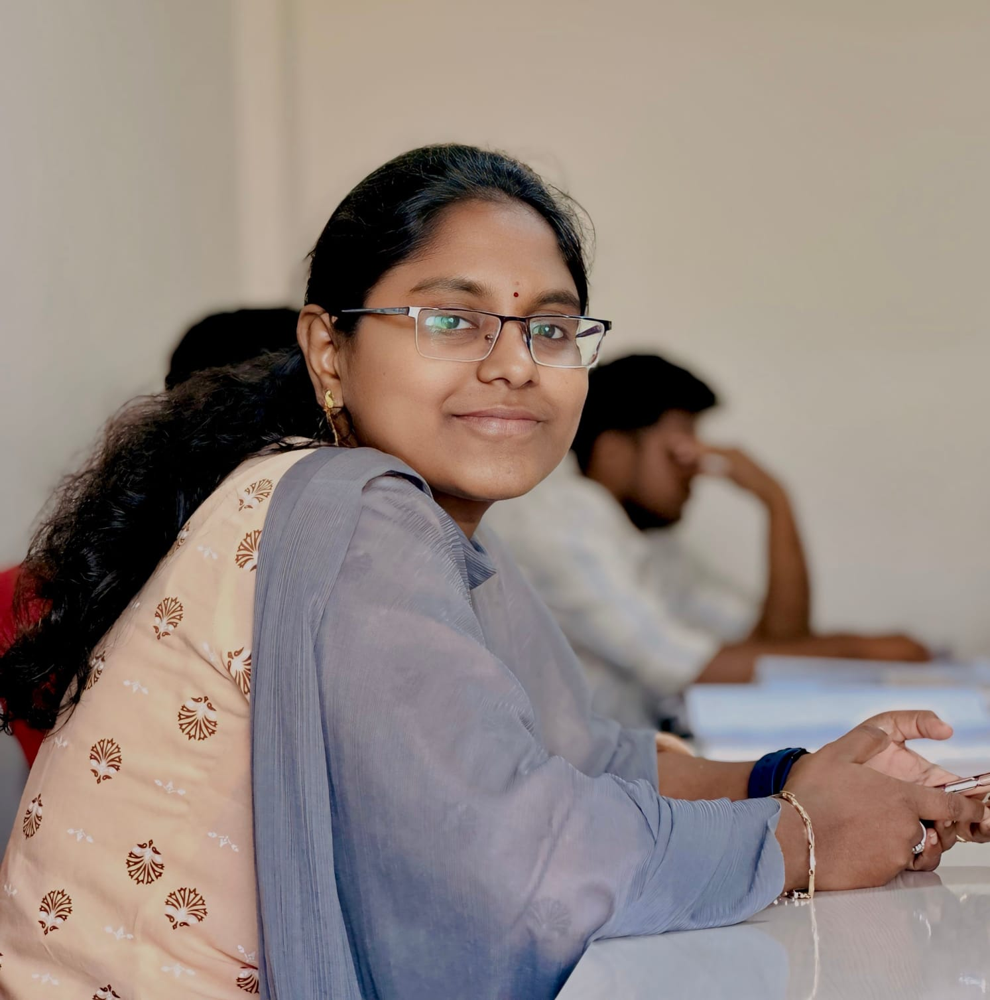

Arikatla Annapurna
Assistant Professor & Ph.D. Research Scholar
Dedicated Assistant Professor in CSE (Data Science) with a strong passion for Machine Learning, Cyber Security, and building intelligent, data-driven applications that solve real-world problems. Currently pursuing Ph.D. in CSE.

Arikatla Annapurna
Assistant Professor
CSE (Data Science)
About Me
Ms. Arikatla Annapurna
Assistant Professor & IIC Co-ordinator | Ph.D. Research Scholar
I am a passionate academic and researcher at the Department of Computer Science & Engineering (Data Science), Rajeev Gandhi Memorial College of Engineering & Technology (RGMCET), Nandyala, Andhra Pradesh. My career is driven by a deep fascination for how intelligent systems can solve complex, real-world challenges.
With 4+ years of dedicated teaching and administrative experience, I specialize in guiding students through the frontiers of Artificial Intelligence, Machine Learning, Deep Learning, and Cyber Security. I hold an M.Tech in CSE (Cyber Security) from JNTUK, Kakinada, and a B.Tech in CSE from Bapatla Women's Engineering College.
I am currently pursuing my Ph.D. at Annamalai University, Chidambaram, Tamilnadu.
Beyond teaching, I serve as the IIC (Institution's Innovation Council) Co-ordinator, organizing hackathons, workshops, and innovation challenges to foster entrepreneurship and technical excellence among students.
- Full Name: Ms. Arikatla Annapurna
- Designation: Assistant Professor
- Organization: RGMCET, Nandyala
- Email: arikatlaannapurna4@gmail.com
- Alt. Email: annuharika56@gmail.com
- Mobile: +91 9182221528
- Location: Nandyala, AP, India
Education
Ph.D. in CSE
Annamalai University, Chidambaram, Tamilnadu
Research Area: Robust DDoS Attack Using Hybrid Feature Selection and Ensemble Classifiers
M.Tech in CSE (Cyber Security)
JNTUK, Kakinada, AP
Graduated with 82.0% (First Class)
B.Tech in CSE
Bapatla Women's Engineering College, Bapatla
Graduated with 69% (First Class)
Intermediate (MPC)
Sri Chaitanya Junior College, Tenali, AP
Graduated with 70.0% (First Class)
Work Experience
Assistant Professor & IIC Co-ordinator
04 May 2022 — Present (4 Years)Department of CSE (Data Science)
Rajeev Gandhi Memorial College of Engineering & Technology, Nandyala, Kurnool, AP.
Serving in academic and administrative roles, facilitating teaching-learning processes, guiding student projects, and coordinating the Institution's Innovation Council (IIC) activities.
Publications & Patents
Patents
Progressive Attribute Attention And Selection Model For Person Reidentification
File No: 202541106545 | Filed: Nov 2025
View PDFA Machine Learning Framework with Sentiment Interation for Social Media Abuse Detection
File No: 202641039322 | Filed: Mar 2026
View PDFAnomaly Detection In Network Traffic Using Hybrid Machine Learning Model of LightGBM & SVM
File No: 202641045015 | Filed: Apr 2026
View PDFKey Publications
An Analytical Model to Identify Cervical Conditions using Digital Colposcopy Images and Convolutional Neural Network Algorithms
International Journal of Power System Technology (Jan 2025)
View PDFMulti-Disease Detection System with X-ray Images Using Deep Learning Techniques
International Journal of Organization Development Journal (Apr 2024)
View PDFText Driven Facial Image Generation
International Journal of Organization Development Journal (Apr 2024)
View PDFEnhancing Phishing Detection: A Machine Learning Approach with Feature Selection
International Journal for Multidisciplinary Research (IJFMR) (Mar-Apr 2026)
View PDFA Comprehensive Survey on Distributed Denial of Service Attack Detection in Cybersecurity
2nd Asian Conference on Intelligent Technologies (ACOIT) (2025)
View PDFSkills
FDPs & Workshops
UiPath Certified Professional
Automation Developer Associate Certification (Dec 2025 - Jan 2026)
View PDFAI Agents in Action
Design, Decision-Making and Development - KKR & KSR Institute (Feb 2026)
View PDFAI Workshop and Hackathon
Collaborate, Create, Innovate - Vardhaman College & RGMCET (Jan 2026)
View PDFForensic Science and Digital Investigation
CVR College of Engineering (Dec 2025)
View PDFMulticloud Network Associate
Aviatrix Certified Engineer (Sep 2025)
View PDFCyber Security
Sapthagiri NPS University, Bangalore (Feb 2025)
View PDFAI Applications in Banking and Healthcare
K.J. Somaiya Institute of Technology (Dec 2024)
View PDFAI And Gen AI with Industry Application
MIT Academy of Engineering (Jul-Dec 2024)
View PDFData Visualization using Tableau
Mohan Babu University, Tirupati (May 2024)
View PDFUniversal Human Values in Technical Education
AICTE-Paloalto (Sep 2023)
View PDFETL - Data Warehousing Tools
G. Pulla Reddy Engineering College (Oct-Nov 2022)
View PDFMicrosoft Azure & Teaching Methodology
APITA/CIMCA, RGMCET (May 2022)
View PDFInstitution's Innovation Council (IIC)
IIC Co-ordinator
As the IIC Co-ordinator at RGMCET, Nandyala, I actively organize and facilitate innovation-driven activities, hackathons, ideathon challenges, and technical workshops to foster a culture of entrepreneurship and technical excellence among students. The IIC plays a vital role in nurturing creative thinking and preparing students for industry challenges.
Innovation & Entrepreneurship
Guiding student projects and startups from ideation to prototype development, mentoring teams for national-level competitions.
Hackathons & Workshops
Organizing events like AI Workshops, Hackathons, and Innovation Challenges to encourage collaborative problem-solving.
Technical Mentorship
Conducting hands-on sessions on emerging technologies — AI, ML, Cloud Computing, and Automation — to bridge the industry-academia gap.
IIC Activity Videos
IIC Activity Highlights - I
IIC Activity Highlights - II
IIC Activity Highlights - III
IIC Activity Highlights - IV
IIC Activity Highlights - V
IIC Activity Highlights - VI
IIC Activity Highlights - VII
Resume
Download my full resume to learn more about my academic background, publications, and professional journey.
Download ResumeGet In Touch
Contact Information
Feel free to reach out for collaborations, discussions on AI & Cybersecurity, or any opportunities.
arikatlaannapurna4@gmail.com
annuharika56@gmail.com
Phone
+91 9182221528
Location
Nandyala, Andhra Pradesh, India